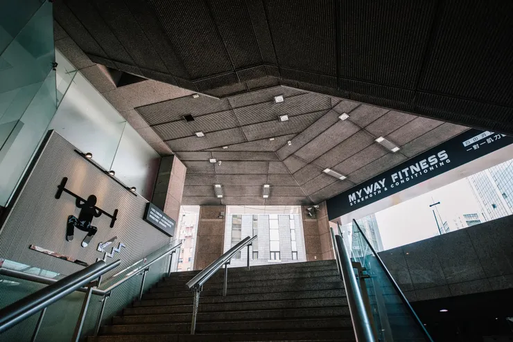

前幾天，雞爸爸還在研究馬凡氏症。
原本只是為了公司健檢，請小妾幫忙比較幾家健檢中心的方案，結果把自己的漏斗胸、脊椎側彎和家族主動脈剝離病史一攤開，居然多了一個完全沒有預期到的課題：
雞爸爸到底有沒有馬凡氏症？
這件事情當然還得交給醫師確認，不過不管最後答案是什麼，有一件事好像都不會改變：
健康得顧，血管也是得顧。
而且雞爸爸最近真正覺得不足的，倒不是重量訓練，是有氧。
星期一就說要去，結果星期三才真的下樓
其實這星期一開始，雞爸爸就打算去健身房。
最近天氣實在熱得有點不像話，要特地頂著大太陽出去運動，光想就會開始流汗...
結果星期一剛好要幫鼠姊姊買下午茶點心送去夏令營...好吧，星期二再去。
結果星期二...發懶。
一路就拖到了星期三...
仔細想想，雞爸爸其實根本沒有資格怪天氣。
因為健身房的位置不需要開車、不用騎車，甚至不用在外面走多久...
公司樓下就有一間MY WAY。

每天中午下樓都看得到，也有同事曾經去過。如果健身房在三公里外，還可以怪天氣、怪塞車、怪沒帶運動鞋。當健身房就在公司樓下的時候，好像真的只剩下自己可以怪。
所以中午雞爸爸還是下樓了...
「你今天是要參觀，還是直接使用呢？」
走進去之後，櫃台很自然地問：「你今天是要來參觀，還是直接使用呢？」
雞爸爸其實沒有想太久，因為根本不用參觀有什麼器材...
雞爸爸不是第一次去健身房，更不是不知道自己想做什麼，因為目的從一開始就很清楚：有氧。
單純找一個有冷氣的地方，騎騎飛輪，再配合走一點坡度，讓心率維持一段時間。
既然都已經走下來了，還參觀什麼？「直接使用。」
講完這句話，連自己都有一種：很好，至少今天真的會流汗了的感覺。
包月1200 離峰899 還是今天想先算時間？
櫃台接著介紹方案，一種是全時段包月1200元，現在還有離峰時段包月優惠899元。
另外一種則按照使用時間計費。
平常碰到這種時候，雞爸爸腦袋裡那個很愛算CP值的小會計應該會立刻上班。
一個月去幾次回本？一次平均多少？899包月是不是比較划算？1200是不是更乾脆？
結果今天心中的小算盤沒有出現，甚至有點像衝動性消費。
可是雞爸爸只想到一個更現實的問題：我真的會固定來嗎？
健身房會員最容易出現的，大概就是辦卡當天的人，跟三個星期後的自己完全不同人。
辦卡的時候：應該都盤算好週一練胸、週二練背、週三練腿、週四有氧、週五核心...
三個星期之後：星期一加班、星期二下雨、星期三累、星期四忘記帶衣服...星期五：
「今天都星期五了，下星期再開始好了。」
想了一下，雞爸爸決定先不要承諾一整個月，承諾今天中午就好，於是選了計時方案。
不再想胸肌，只是想幫血管多爭取一些喘息的空間
雞爸爸不是沒有健身經驗，甚至年輕時也曾經被台北車站的亞歷山大拉進去辦一年會員...
相隔二十多年進入付費健身房，已經有自己的運動策略...
以前HIIT也做過，單槓、伏地挺身、重量訓練也不是陌生的東西。
這次走進健身房，並不是想從零開始學健身。
反而是最近研究馬凡氏症之後，開始重新想：
現在的雞爸爸，到底需不需要把「重量」擺在運動的第一順位？
以前喜歡練肩、練胸，畢竟男生總是喜歡肩膀寬一點和胸口厚一點，穿衣服就是比較挺拔...
到了中年開始在意：體脂肪能不能再低一點？肚子能不能再小一點？單槓能不能再多幾下？
更妙的是，雞爸爸最早會知道「漏斗胸」，就是因為覺得自己的胸肌怎麼那麼難練...
結果一路從胸肌研究到漏斗胸，再從身體特徵一路走到馬凡氏症。
繞了一大圈之後，反而覺得：現在也許不用急著把重量愈加愈大。
到底有沒有馬凡氏症，還要掛號等醫師評估，但至少在這之前，雞爸爸很確定一件事：
最近的有氧真的太少了。
今天就是：飛輪、坡度走、把心肺的份量補回來...
不再是不知道怎麼練，而是開始重新決定：現在的身體，什麼比較值得擺在前面。
跑步機只有三台，所以雞爸爸先在飛輪上候位
來之前，同事其實有先提醒雞爸爸一件事：這裡跑步機只有三台。
中午人多的時候，可能要等到一點左右才比較有機會，雞爸爸一進去，果然三台都有人。
好吧，本來也打算騎飛輪，就先踩。
戴上耳機、聽聽音樂、踩一踩再轉頭看看後方的跑步機...還再跑，再踩一下，還是有人...
想說沒關係，就算最後沒有排到跑步機，總是比外面大太陽下騎腳踏車好。
突然間看到有人下來了，差不多12點50分，終於等到一台。
雞爸爸成功站上了跑步機，還有時間好好動一動...很好，正餐來了。
速度6、坡度7，走25分鐘
雞爸爸今天本來就不是來跑速度的，所以站上跑步機後，直接設定成自己想要的坡度走。
速度6、坡度7。
開始走，其實這種走法看起來沒有跑步那麼熱血。
旁邊如果有人用時速十幾公里狂奔，雞爸爸大概就是那個很認真往山上走的人。
但是走了一段時間之後，心跳還是慢慢上來。
汗也開始流，腿開始有感覺，最後走了大約25分鐘。
雞爸爸反而滿喜歡這種感覺，沒有追速度，也不需要跟旁邊的人比。
就是很單純地讓身體持續動一段時間，戴上耳機，看看跑步機上的風景片...
對現在的雞爸爸來說，這可能比「幾組幾磅的重訓」更符合自己想做的事情。
既然都流汗了，乾脆洗個澡再回公司
運動結束之後，看著自己滿身汗，雞爸爸突然想：反正都來健身房了，順便洗個澡好了。
沖掉汗、洗乾淨、再把頭髮吹乾，全部整理好之後，再爬上七樓辦公室。
一坐下來，雞爸爸突然有種：欸，滿舒服的。
不是那種練完腿，回辦公室只想癱在椅子上的累，反而有一種中午把身體重新開機一次的感覺。
早上坐了半天，中午出去動一下。
流汗、洗澡、把全身和頭髮暖呼呼地吹乾，再回到冷氣房裡。
整個下午好像被切成了另外一段，然後雞爸爸看了一下今天的消費—83元。
飛輪、坡度走、洗澡、吹頭髮，全部加起來83元...
雞爸爸突然覺得：好像還滿可以的...
83元是收據 記錄今天從「我知道」變「我做到」的生活
如果真的每個星期來很多次，月費方案當然可能比較划算，這種事情雞爸爸其實不用算也知道。但是今天第一次來，反而滿喜歡計時制這種沒有壓力的感覺。
有時間，就下樓。
想動一個小時，就進來。
像是一場說走就走的小旅行。
而且還不到一百塊。
以前雞爸爸很容易很認真的思考，一星期要運動幾次？什麼時候回本？哪個方案CP值最高？
現在反而開始覺得，有些事情可以把順序倒過來，先讓它成為生活，再決定要不要買方案。
今天真正值得記住的，不是運動的過程和內容，因為很多時候，我們不是不知道什麼對健康比較好。
只是「我知道」其實很容易。真正難的是—讓「我知道」，變成「我今天有做到」。
有沒有馬凡氏症交給醫師，要不要包月交給小妾
前幾天，雞爸爸還坐在電腦前面研究漏斗胸、蜘蛛指、主動脈和馬凡氏症。
今天運動完，有一種很不錯的感覺。到了四十幾歲，好像不需要再什麼事情都自己扛著想。
有沒有馬凡氏症，交給醫師。
至於應該繼續83元一次，還是改成899元離峰包月？雞爸爸就更不用動腦。
小妾已經幫我算好了。有圖為證...

很好，分工完成。雞爸爸覺得，這種生活方式很不錯。
疾病交給醫師判斷...；數字交給AI計算...；身體，自己負責照顧...
不知道的，不用硬猜...；算不清楚的，不用硬算...；但今天能做的，就今天去做...。
找到自己的節奏，It's MY WAY
所以今天沒有挑戰PR，沒有大重量，不用糾結重訓有沒有成效。
就是騎飛輪、坡度走，流流汗、洗洗頭、洗洗澡，再把全身暖呼呼地吹乾。
然後花了83元，舒服地走回辦公室，
如果最後醫師說雞爸爸沒有馬凡氏症，很好，今天的有氧一樣沒有白做。
如果真的有些地方需要更注意，那至少從現在開始，也慢慢找到更適合自己的運動方式。
以前總覺得健康要有一套很完整的計畫，現在反而開始學著放鬆一點。
該交給專業的，就交給專業。自己真正能做的事情，就好好去做。
至於明天雞爸爸會不會又走下樓？不知道。
但至少今天走下去了。有些健康問題，需要等答案。照顧自己的身體，不需要。
學著不用什麼都控制得剛剛好，慢慢找到適合現在這個自己的生活節奏。
It's MY WAY，百元內買到的幸福，感覺還不錯。